Joe Bryant
Joe Bryant’s full name is Joseph Washington Bryant and he was born on 19 October 1954.
His current age is 65 years and his zodiac sign is Libra. Moreover, he is originally from Philadelphia, Pennsylvania, USA.
His parent’s names are not available as he prefers to keep his personal life as private as possible.
Talking about his educational background, he attended John Bartram High School and later enrolled at La Salle University, both institutions locating in Philadelphia.
However, there is no information about what subject he majored in and when he graduated. There also isn’t much information regarding his family and childhood.
Moreover, his nickname is Jellybean.
Joe Bryant is an American former professional basketball player and current coach.
He was the head coach of the WNBA’s Los Angeles Sparks from 22 August 2005 until 4 April 2007. Hee then returned to that position for the remainder of the 2011 WNBA season.
He has also coached in Italy, Japan, and Thailand.
After enrolling at La Salle University, he, a 6’9″ (2.07 m) forward, Golden State Warriors drafted him in the first round in 1975.
However, before the season started, he was dealt with his hometown team with whom he played for four seasons. The team was the Philadelphia 76ers. Hi’s 1976–77 Sixers team, featuring
NBA all-stars Julius Erving, Doug Collins, and George McGinnis, reached the NBA finals.
But sadly, they eventually lost to the Portland Trail Blazers 4 games to 2.
Later, he headed back to the West Coast when he was traded by the 76ers to the San Diego Clippers. For this team, he played from the year 1979 to 1982.
In the first game of the 1979–80 season, he slam-dunked on Kareem Abdul-Jabbar, but despite that and a 46-point effort by Bryant’s Sixer/Clippers teammate World B.
Free, who was then known as Lloyd Free, the Lakers won the game off a game-winning skyhook by Abdul-Jabbar.
 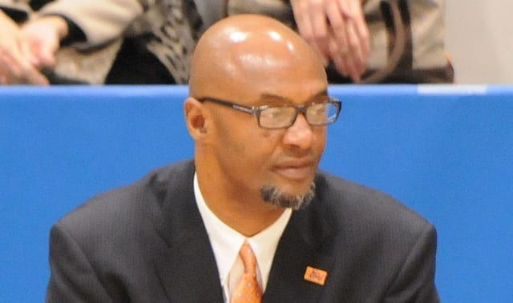
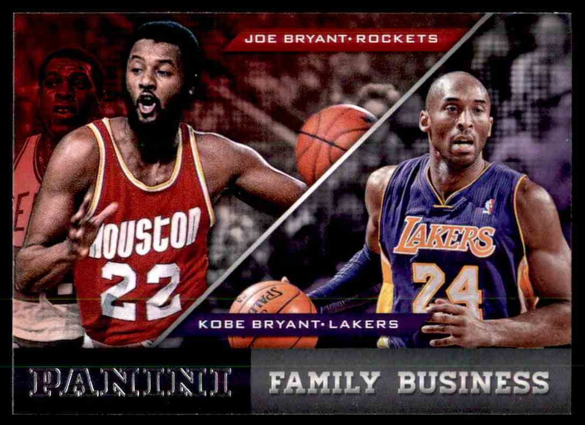
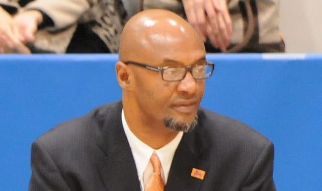
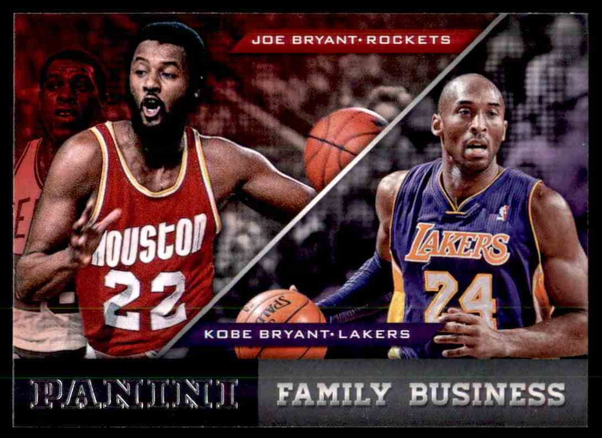
Pamela Jean Bryant
Pam Bryant is a 67 years old famous socialite. She wa born in 1954 in Philadephia, Pennsylvania. Likewise,
she was born as Pamela Cox Bryant in a Afro-American family.She was raised along with her brother John Auther
"Chubby" Cox III.She completed her highschool at Roxborough High School. Similarly, she has the highiest qualification
of a Bachelors degre.
Pamela Cox Bryant is an American socialite and is best known for being the wife of former NBA player Joe Bryant.
She is also the mother of late Los Angeles Lakers legend Kobe Bryant.Pamela Jean Bryant was an American model and
actres. She was Playboy magazine's Playmate of the Month for its 1978 issue.Bryant has a very strained relationship with her son Kobe.
Bryant along with her husband, her two daughters, her son longtime advisor and agent Arn Tellem, or her son Laker teammates did not attend Kobe's wedding.
She was opposed to the marriage for a number of reasons. Reportedly Bryant had problems with him marrying so young, especially to a woman who was not African-American.
This disagreement resulted in an estrangement period of over two years, which ended when the couple's first daughter was born. The birth of Natalia influenced Bryant to reconcile his differences with his parents.
In 2013, Bryant intended to an auction house over memorabilia from his early years and had a legal disagreement with her son .
Pamela Bryant received $450,000 from the auction house for the items, and claimed Bryant had given her the rights to the items he had remaining in her home.
However, his lawyers asked the auction house to return the items to Bryant. Before the scheduled trial, a settlement was reached allowing the sale of less than 10% of the original items.
She apologized to him in a written statement, which also acknowledged the financial support Bryant had provided them in the past.
Talking about social media, pam is pretty much active is social media through her Instagram. She has earned more than 400 followers on her Instagram account.
Similarly talking about the net worth of her, she does not earn anything however her husband’s net worth is estimated at around $2 million.
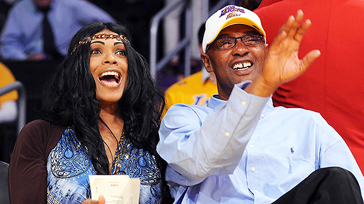
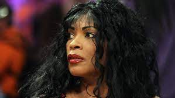
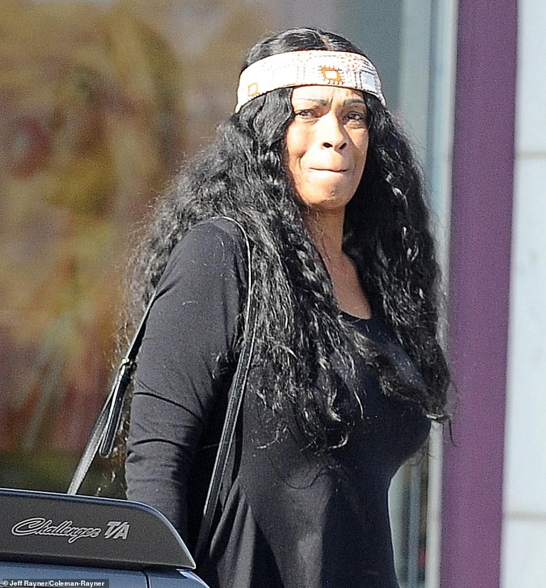
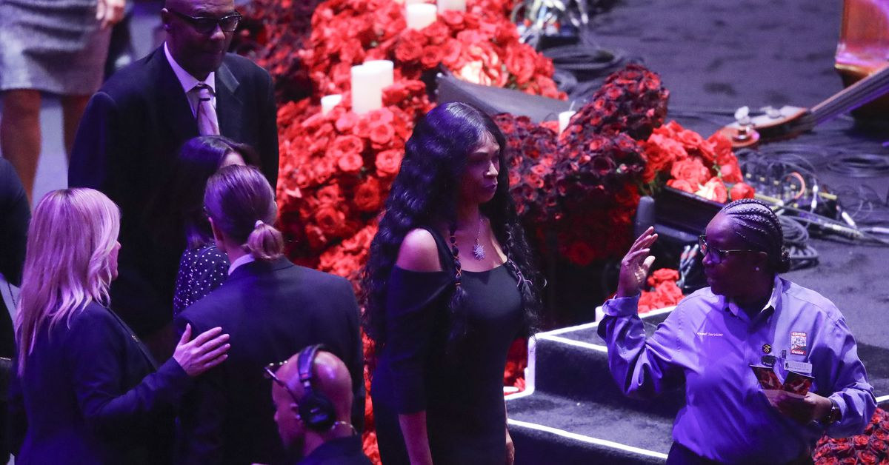
Shaya Bryant
Shaya was born July 30, 1997, in Philadelphia, the United States, to her celebrity parents.
Ian
Ian Cerojano
Shaya currently lives in Las Vegas, close to his sister Sharia Bryant. She currently lives with her husband, Michael Tabb, and has three kids together.
She has one daughter and two sons.
Shaya Bryant is a businessperson and an American Socialite from the state of Philadelphia.
She works in the director position in the company “ Invest Hospitality, “a revenue management company located in Las Vegas.
Shaya is popularly known for being the sister of top NBA player Kobe Bryant who sadly passed away in January 2020.
She was the middle child of former NBA players Joe Bryant and Pamela Cox Bryant.
She has an older sister, namely Sharia Bryant, and her younger brother being Kobe Bryant.
Shaya and her siblings initially lived in Italy with her dad, who played pro basketball in the Italian league.
Subsequently, as a teen, they lived in Philadelphia.She primarily played in the mid-1990s,
and her stats from her volleyball career are noted on the website for the LaSalle University Explorers Volleyball team.
This eventually also influenced her brother Kobe’s eldest daughter, Natalia. Natalia, too, currently plays volleyball for her high school team.
Shaya initially worked as a hostess at a high-end steak house in the city of Las Vegas.
She then also moved to work at the MGM Grand Hotel & Casino for 10 years.
Subsequently, she has worked as the Group Dining & Events manager at Aria Resort & Casino since May 2019.
She also has worked as director of Revenue Management To Invest Hospitality.
Shaya Bryant, despite being the sister of Kobe Bryant, lives a straightforward and modest life.
Working in the hospitality sector, she has amassed a net worth of around $100,000.
The primary source currently of her revenue is the post she holds as a director of revenue management.
Her brother, however, had accumulated a net worth totaling $500 million. This net worth is not shared with his sister Shaya.
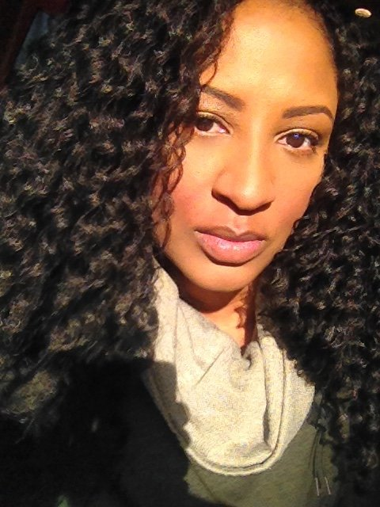
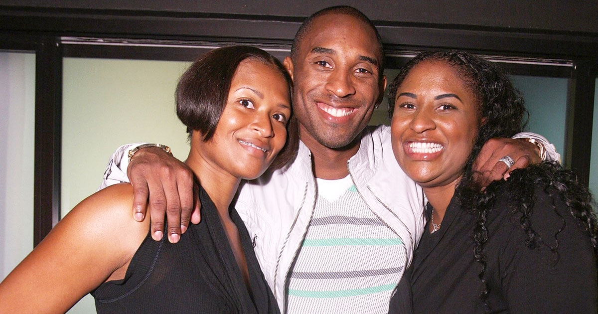
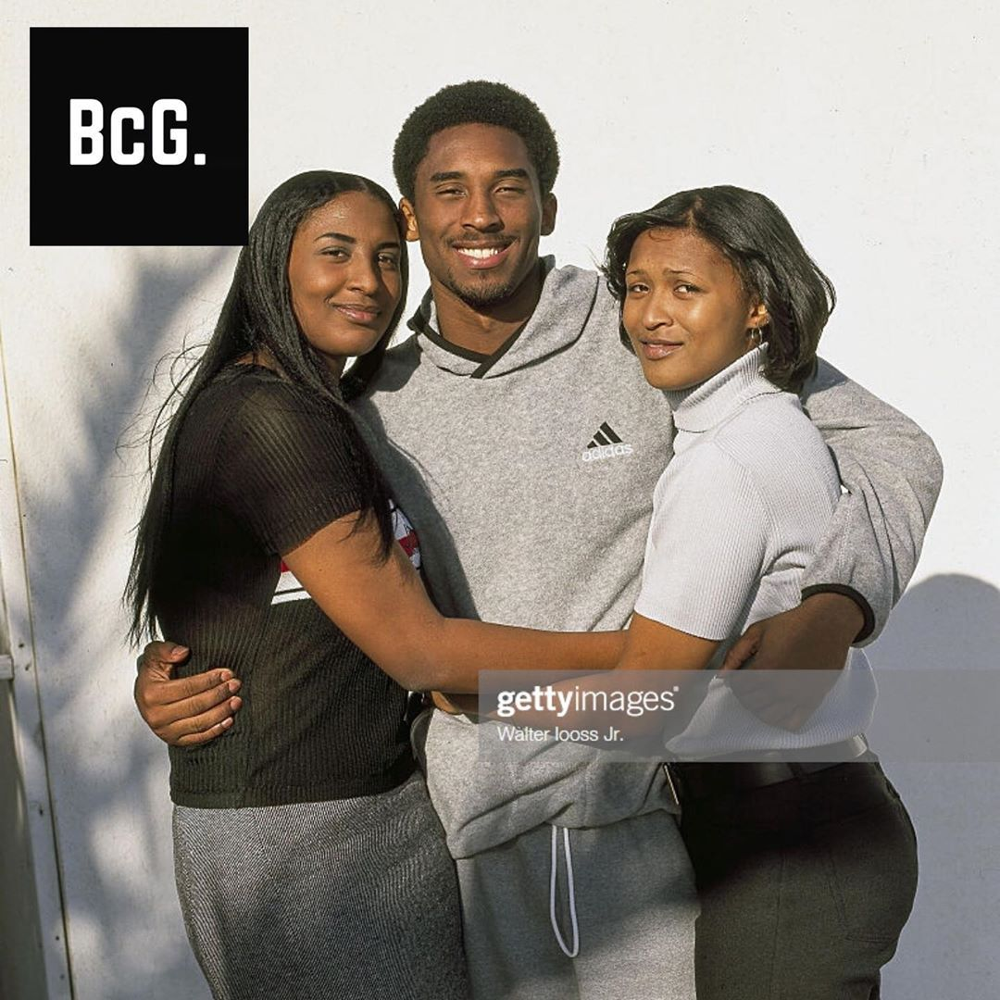
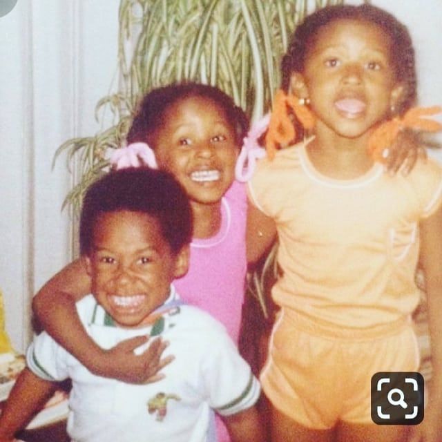
Shaira Bryant
Sharia Bryant is the oldest daughter of former NBA player Joe Bryant and Pamela Cox Bryant.
She has two younger siblings: Shaya, and Kobe (1978–2020). She is also the maternal niece of basketball player John "Chubby" Cox. Bryant was raised Roman Catholic.
When Bryant was a child, her father left the NBA and moved her family to Rieti in Italy to continue playing professional basketball.
Sharia Bryant is an American Businesswomen who rose to fame as a daughter of Joe Bryan, former NBA player. Not just that, she is also popular as an older sister of late Kobe Bryant, basketball icon.
Most of Bryant’s fans are shock over the news of her younger brother and his daughter Gianna’s tragic death, last Saturday.
Well, its perks of being a celebrity child that you can enjoy a lavish life and similar is with Bryant. Currently, 43 years old is living a blissful conjugal life in a million dollars mansion.
Let’s check out the details about Shaira Bryant’s net worth and personal life.
Sharia Bryant Washington was born as Sharia Bryant on March 19, 1976, in Philadelphia, Pennsylvania the USA. She is the oldest daughter of former
NBA player Joe Bryant and Pamela Cox Bryant. Moreover, she grew up in Philadelphia along with her two siblings Shaya Bryant and Kobe Bryant. Among them, Sharia is the oldest one and Kobe is the youngest.
Sharia belongs to Black ethnicity whereas her zodiac sign is Pisces.
Moving towards Sharia’s personal life, she is a married woman. She is married to a Co-founder of Brandyay LCC Jerrod Washington. There are no details of her marriage date and venue. However, the couple shares three children,
two of them are girls and one of them is a boy whose name is Jett Washington.
Moving towards Sharia’s net worth, she has earned a lot of money as she is a businesswoman. However, she hasn’t mentioned her net worth, but it is believed that her net worth is around $800 thousand as of 2020.
In addition, her father has a net worth of $2 million from his long professional career.
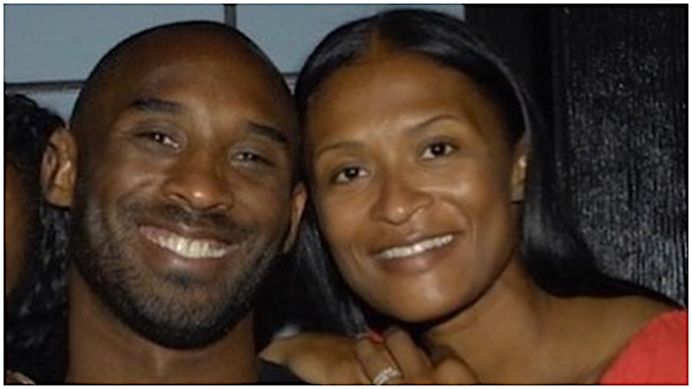
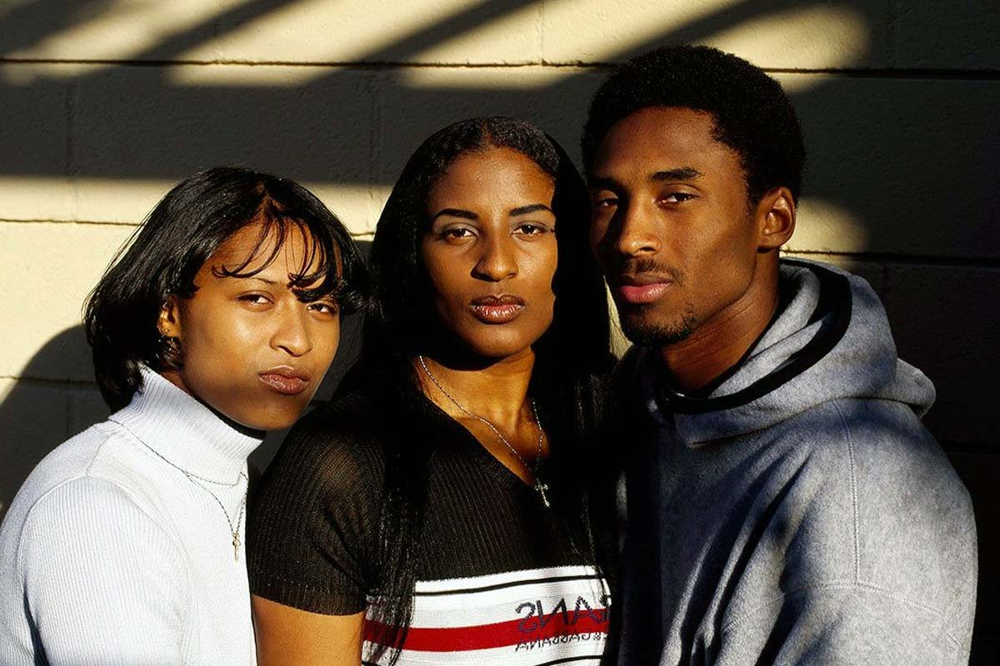
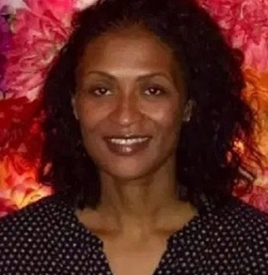
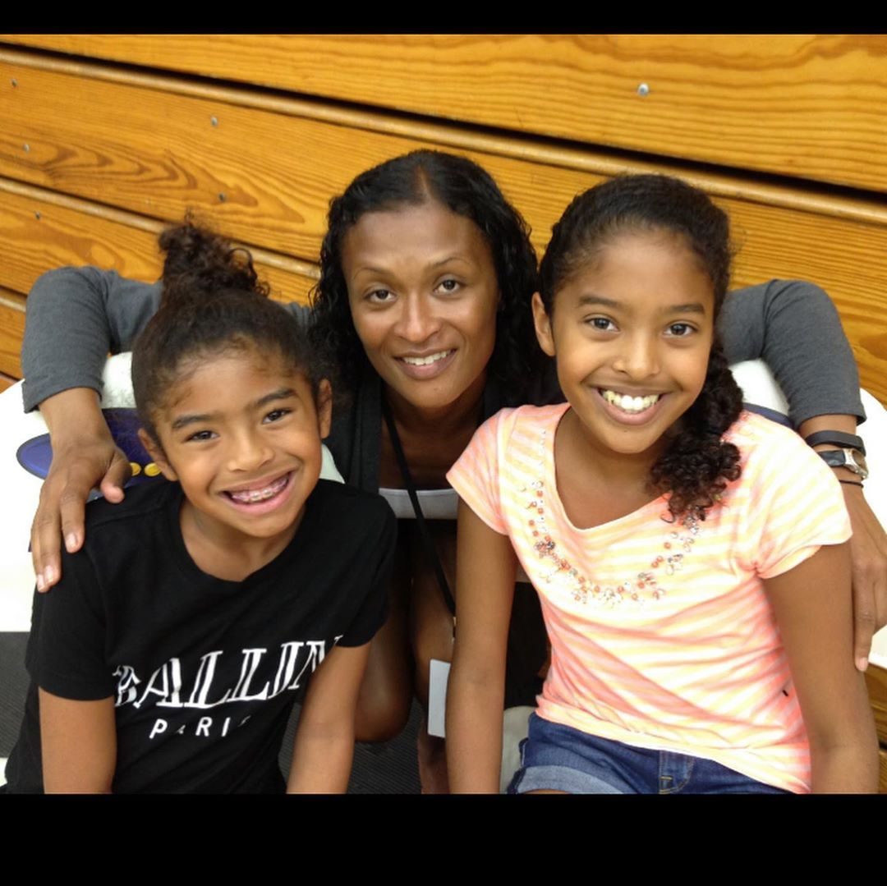
Kobe Bryant:"The Black Mamba"
Born in Philadelphia and partly raised in Italy, Bryant was recognized as the top American high-school basketball player while at Lower Merion.
The son of former NBA player Joe Bryant, he declared for the 1996 NBA draft and was selected by the Charlotte Hornets with the 13th overall pick; he was then traded to the Lakers.
As a rookie, Bryant earned a reputation as a high-flyer by winning the 1997 Slam Dunk Contest, and was named an All-Star by his second season. Despite a feud with teammate Shaquille O'Neal,
the pair led the Lakers to three consecutive NBA championships from 2000 to 2002. In 2003, Bryant was charged with sexual assault; criminal charges were dropped after the accuser refused to testify,
and a lawsuit was settled out of court, with Bryant issuing a public apology and admitting to a sexual encounter he maintained was consensual.
Kobe Bean Bryantwas an American professional basketball player.
A shooting guard, he spent his entire 20-year career with the Los Angeles Lakers in the National Basketball Association (NBA). Widely regarded as one of the greatest basketball players of all time.
Bryant won five NBA championships, was an 18-time All-Star, a 15-time member of the All-NBA Team, a 12-time member of the All-Defensive Team, the 2008 NBA Most Valuable Player (MVP), and a two-time NBA Finals MVP.
Bryant also led the NBA in scoring twice, and ranks fourth in league all-time regular season and postseason scoring. He was posthumously voted into the Naismith Memorial Basketball Hall of Fame in 2020.
Bryant died, along with his daughter Gianna and seven others, in a helicopter crash in Calabasas, California in January 2020. A number of tributes and memorials were subsequently issued,
including renaming the All-Star MVP Award in his honor. In 2021, Bryant was honored as one of the greatest players in league history, being named to the NBA 75th Anniversary Team.
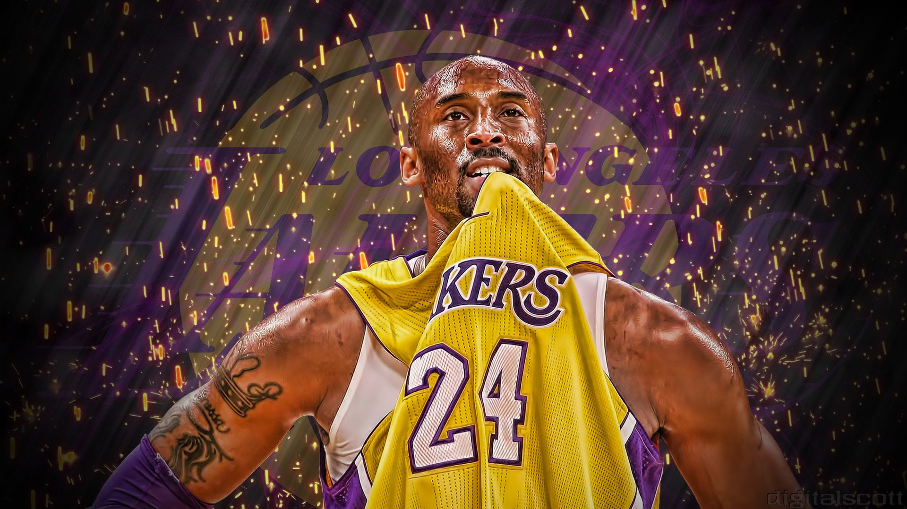
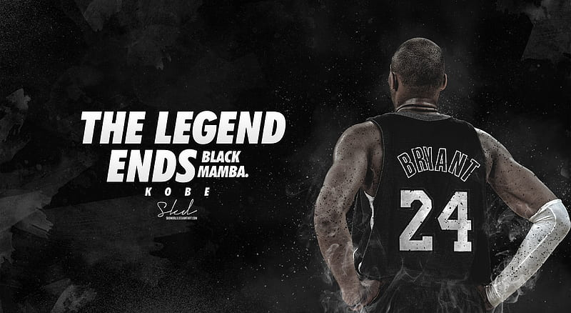
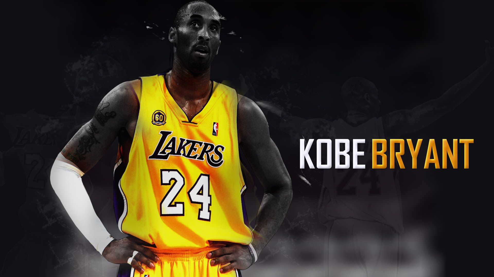
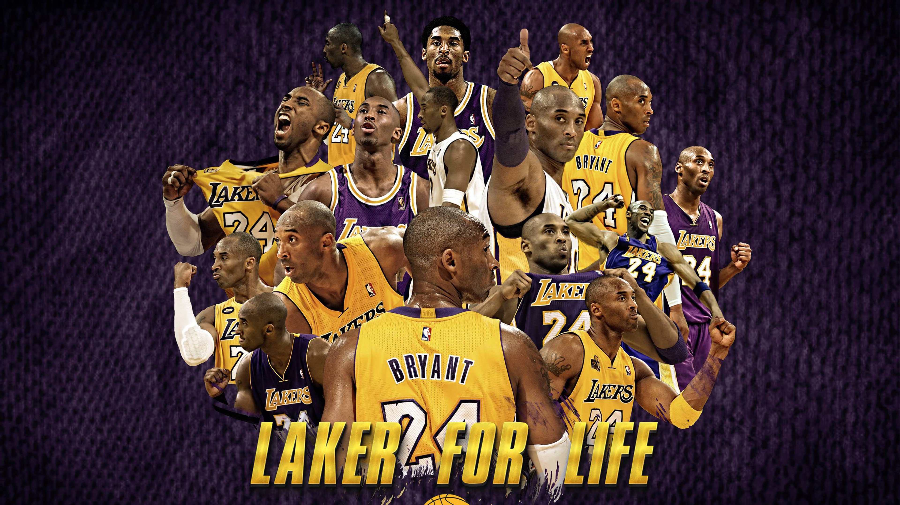
Career Of Kobe Bryant